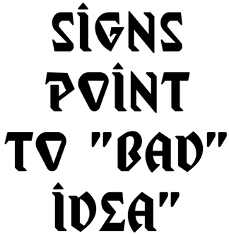
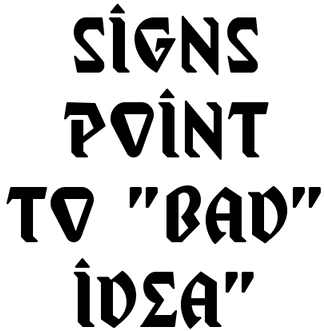

Of all the releases on my tiny label, I'm most proud of this series, despite the high cost in time, money and effort. It was a crazy idea that I didn't think possible, but with Clark's boundless enthusiasm and support, we made it happen.
I came across the Art*O*Mat while surfing the 'net researching various things-O-Mat history and immediately wanted to be involved in his brilliant project. I joined his repotoire of "Artists in Cellophane", purchased the basic materials, and set about doing runs of pieces based on old stamps, currency and finally maps.
I'd always been interested in the Art Deco & Mid-Century influenced design of talking (aka Ouija) boards and had accumulated a collection of them, as well as using thrift store finds of the Parker Bros. boards as endcaps for the old steel shelves I used for my record collection.
It dawned on me that the A*O*M boxes were a similar profile to the ones talking boards came in, and I started thinking about doing a series of miniature ones. Around the same time I was researching shaped CDRs and came across a company making custom rectangular "business card" sized blanks that were small enough to just barely fit in an A*O*M vending machine box, angled corner to opposite corner.
Thus a really bad idea was hatched.
I ran things past Clark and with his go-ahead I quickly put together a package design based on CDRs decorated as vintage boards, with an info sheet styled after "insert" movie posters that originated in the 1940's and were common until the early '80's. Those posters were "tall", commonly 14x36in for a 0.389 ratio and used the popular style of text in wildly varying fonts, such as this classic:
The blank CDRs were rated for approx. 1.1GB storage and could only store about 3m30s of 44.1k/16b audio. With the help of Jeff Arnold of Goldenhawk Technology, his then-"studio gold standard" CDR burning software, CDRWIN, and an open source driver for a Plextor 4416 burner, I was able to utilize under- and overburn to pack just under 5m of audio on each disc. Many discs were killed during testing and used to make boxed prototypes for Clark to test in his machines. He worked out how best to package everything while still meeting size requirements and had a custom set of boxes cut for me.
I found someone on Ebay who was making and selling vintage dollhouse pieces including a tiny Oujia board and planchette (the pointing device used with the boards.) I ordered 1000 of the latter from her and was ready to go.
Soliciting tracks from friends & artists I'd worked with and admired, I soon had a lineup of 13 songs ready to go. Spending several nights a week and usually most of a weekend day over the next year and a half, I designed, printed, burned and hand-assembled at least 90 copies of each release, packing up 50 and shipping them to Clark for his vending machines whenever they were ready.
One copy of each run of 50 contained a "golden ticket" with a secret word and a message that if the finder emailed it to the studio, they'd be sent a box with all 13 of the releases and a compilation CDR of the tracks free of charge. Over the years only one person contacted me but was delighted to receive her prize. Good thing I don't run a chocolate factory, right? Every contributor also received the same.
There were a number of times I felt like throwing in the towel for various reasons but as I'm very persistent, I was determined to see the entire project through. I was recently contacted by a fellow music nerd who had managed to buy most of the releases and was seeking the ones he was missing. Unfortunately they had long since sold out, but hearing his praise about what a unique and interesting series it was and how it'd made a mark on him and a few of his fellow ambient music fanatics completely erased any misgivings I might have still harbored.
Heartfelt thanks go out to Clark Whittington and all the amazing artists who contributed! Y'all rock.